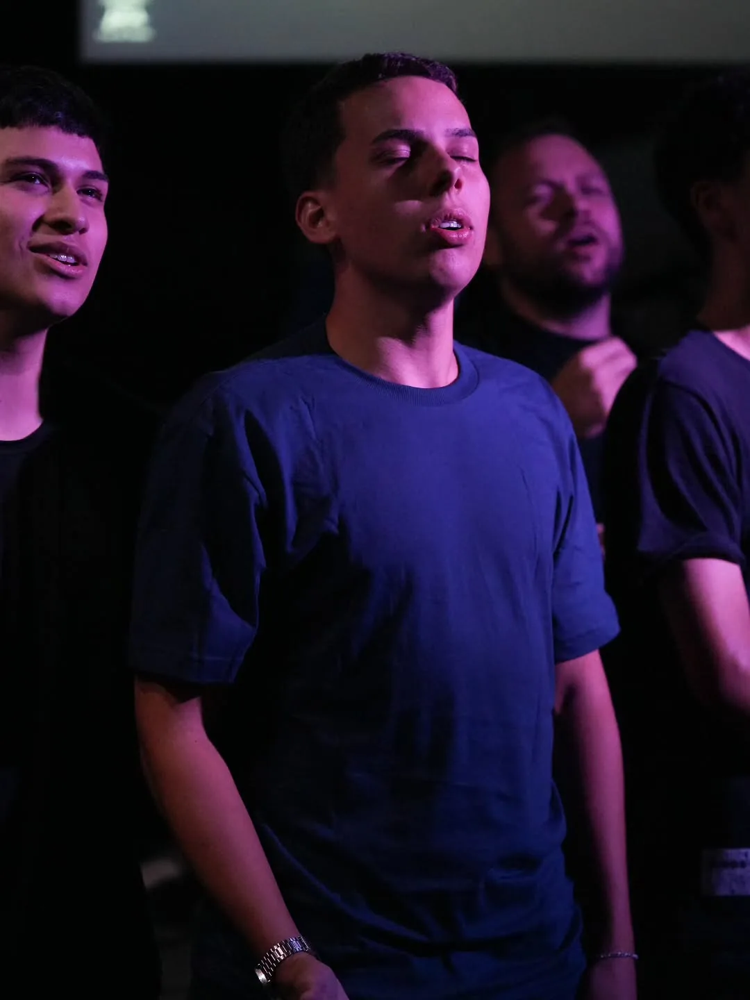
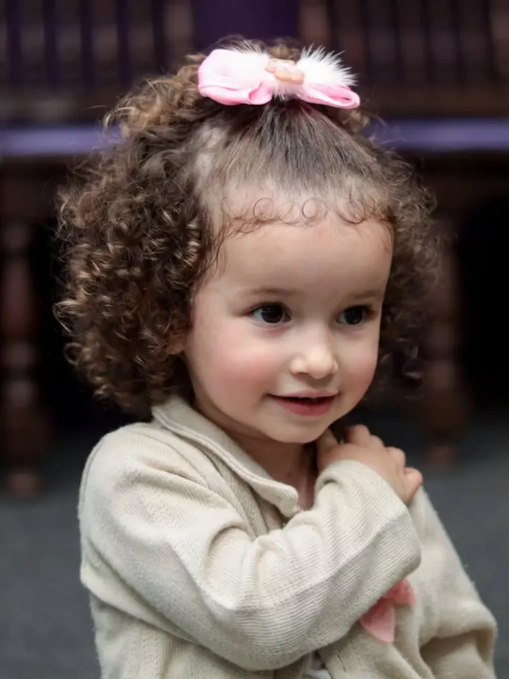
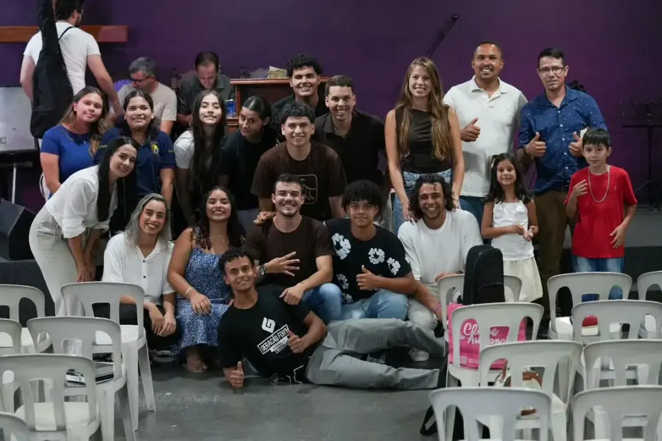
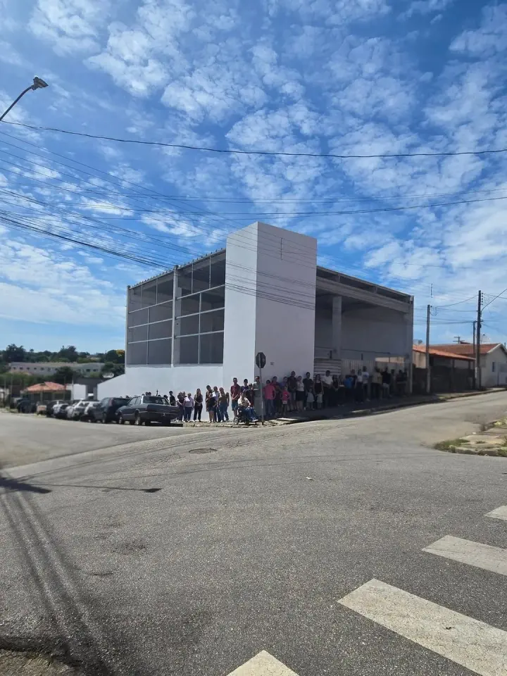

UM
MINISTÉRIOFORTE
A IEQ Central existe para conectar pessoas a Deus, fortalecer famílias e impactar nossa cidade através do Evangelho de Jesus Cristo.
"Porque Deus amou o mundo de tal maneira que deu o seu Filho unigênito." — João 3:16
PROGRAMAÇÃO
Fale conosco →
NOSSA
história
NOSSA FÉ
A IEQ Central nasceu com o propósito de levar a mensagem de Jesus de forma verdadeira, relevante e transformadora. Somos uma comunidade apaixonada por Deus, comprometida em viver a Palavra, servir pessoas e impactar nossa cidade com amor e fé.
Nossa missão é formar discípulos, fortalecer famílias e criar um ambiente onde cada pessoa possa encontrar propósito, pertencimento e uma experiência real com Deus.
NOSSA COMUNIDADE EM FOTOS




VENHA NOS
VISITAR
EndereçoRua Claudino Protazio De Almeida 203
Angatuba-SP
CEP 18240-025
Telefone
+55 15 99649-6104
Entrar em Contato
FALE
CONOSCO
Tem alguma dúvida, pedido de oração ou quer saber mais sobre nossa comunidade? Entre em contato pelas nossas redes sociais ou fale diretamente com a gente pelo WhatsApp.
no WhatsApp
Nossa equipe está disponível para responder dúvidas, receber pedidos de oração e dar as boas-vindas a novos visitantes. Chama a gente!
no Instagram
Acompanhe nossa programação, registros dos cultos, devocional diário e muito mais nos nossos perfis no Instagram.